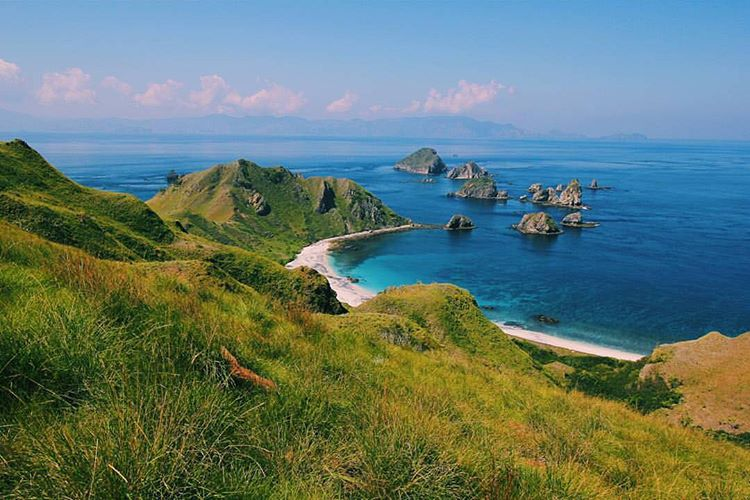

Pulau Kelapa
Post by dayat, Sunday 06 Juny 2018
Pulau Kelapa adalah pulau terluar Wilayah Propinsi Nusa Tenggara Barat, berlokasi di ujung timur dan berbatasan langsung dengan Wilayah Propinsi Nusa Tenggara Timur. Secara administrastif termasuk dalam Wilayah Kecamatan Lambu, Kabupaten Bima, Nusa Tenggara Barat. Secara Geografis berada di tengah-tengah Perairan Selat Sape, Sebelah timurnya langsung berbatasan dengan Pulau Komodo dan sebelah barat langsung berbatasan dengan Pulau Sumbawa.
Pulau kecil ini termasuk pulau yang tidak berpenghuni tetap, namun di beberapa dataran pantai dihuni oleh petani musiman berasal dari Kecamatan Lambu, mereka menetap pada saat musim tanam, dan kembali lagi ke kampung setelah panen. Untuk mencapai pulau ini bisa dengan menyewa atau mencarter motorboat berukuran tanggung atau yang lebih besar Pelabuhan Sape, bisa melalui Pelabuhan Penyeberangan ferry, atau Pelabuhan Niaga Gusung Bugis. Lama tempuh sekitar 2 jam atau bisa lebih cepat bila menggunakan boat double engine (bermesin ganda).
Pulau ini menawarkan keindahan yang luar biasa, mulai dari pantai yang bersih, keindahan bawah laut yang menawan, perbukitan savana nan eksotis, sampai dengan view Puncak yang membuat pandangan mata tak mampu berkedip.
Untuk mencapai Puncak Pulau ini dibutuhkan waktu trekking sekitar 1 jam, tetapi waktu ini bisa lebih lama jika sepanjang lintasan kita tidak menyia-nyiakan view yang indah untuk berfoto-foto. Karena hamparan padang dan bukit savana sepanjang perjalanan teramat sangat memanjakan mata. Jalur trekking nya sih cukup lumayan melelahkan, tapi rasa lelah itu akan terbayar impas begitu kita mencapai puncaknya.
Di puncak Pulau ini kita akan langsung disambut oleh senyum ramah beberapa orang penjaga lampu mercusuar. Di sini terdapat beberapa bangunan kecil yang merupakan kantor dan mess bagi penjaga mercusuar. Ada juga bekas kantor lama yang dibangun waktu jaman penjajahan Belanda. Bangunan ini terbuat dari kayu yang sangat kuat, masih terawat dengan rapi walaupun tidak lagi digunakan, dan kita diperbolehkan tidur di bangunan ini, walaupun agak horor dikit (soalnya bangunan kuno).
Puncak Pulau Kelapa menghadirkan pemandangan yang luar biasa indah nya, ke segala arah mata memandang, hamparan padang dan perbukitan savana langsung menyambut pandangan. Laut yang mengelilingi pulau bagaikan hamparan permadani biru. Ke arah timur pandangan akan terbentur angkuhnya Pulau Komodo, ke arah utara kita bisa memandang Pulau Gilibanta dari Kejauhan, dan tegar nya Pegunungan Lambu di Pulau Sumbawa terlihat jelas ke arah Barat. Sementara ke arah selatan kita bisa langsung memandang garangnya Samudera Indonesia, dan yang paling membuat mata tak berkedip adalah indahnya gugusan pulau-pulau kecil di sebelah tenggara.

Waktu terbaik untuk trekking ke puncak Pulau Kelapa adalah di sore hari sekitar jam 16.00, karena matahari tidak begitu panas dan kita bisa langsung disambut oleh sunset yang indah di puncaknya. Dan menginap di puncak Pulau Kelapa merupakan pilihan terbaik, karena kita juga akan dimanjakan oleh indahnya sunrise keesokan pagi nya. Setelah puas menikmati indahnya Puncak, kita bisa langsung memutuskan untuk turun menikmati eksotisnya pantai, mandi atau snorkeling.
Sumber : http://adventurezonebima.blogspot.com/2016/08/indahnya-pulau-kelapa-bagaikan-raja.html